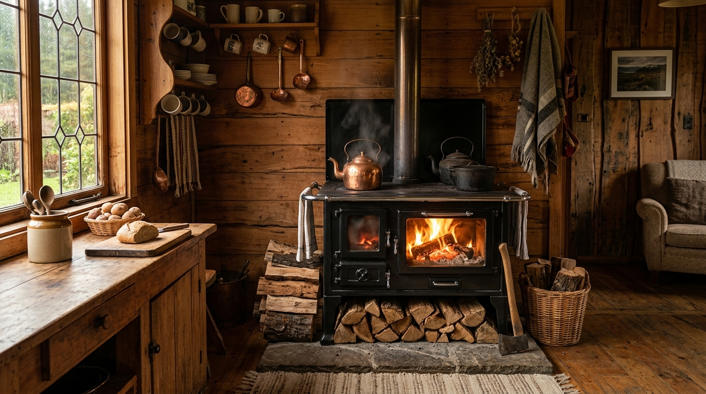
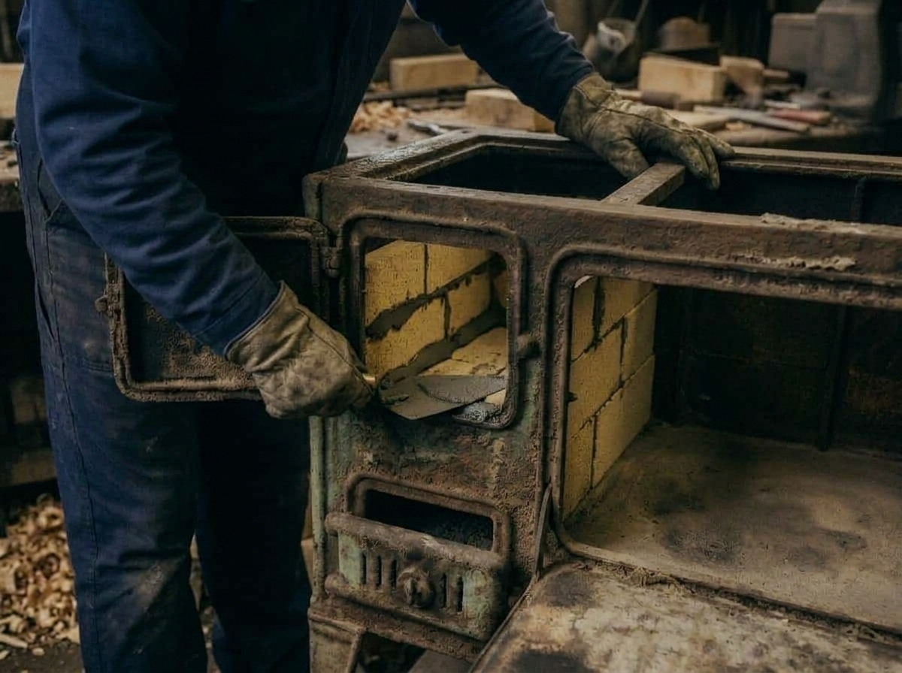

Categoría
Consultar Disponibilidad por WhatsApp
Título
GarantíaDescripción detallada.

Devolvemos la firmeza, rendimiento térmico y tiraje limpio a tu cocina a leña. Reconstruimos cámaras de combustión con mortero y ladrillos refractarios de alta densidad, cambiamos latas quemadas por latas nuevas de buen espesor y recuperamos piezas en fundición para prolongar su vida útil y asegurar un calor eficiente en tu hogar.

Latas nuevas de buen espesor y refractarios sellados para óptimo tiraje.
Cañones en 4" y 5", mantas pasamuros, sombreretes y codos.
Diagnóstico honesto y trato personal con Marcelo Montalba.
Traslado a domicilio disponible solo dentro del sector.
Recuperamos cocinas a leña antiguas, oxidadas o con grave deterioro por los años y el fuego. Aunque tengan latas quemadas, refractarios deshechos o la estructura picada, en Taller Montalba reconstruimos el artefacto desde su base para devolverle su potencia calórica, un tiraje limpio y asegurar una larga vida útil.
Pérdida de tiraje por cajas de humo rotas, perforaciones en chasis o sellos vencidos.
Chapas desgastadas o perforadas por el fuego directo que provocan fugas de calor.
La cocina consume demasiada leña y no retiene temperatura hacia el horno.
Cubierta desalineada, platos agrietados o enlozado exterior deteriorado.
Incluso en cocinas con años de desgaste, óxido superficial o piezas trabadas, aplicamos un proceso metódico de desarme, saneamiento y refuerzo estructural:
Se desarma la cocina para evaluar individualmente el estado del chasis, cajas de humo y piezas de fierro fundido. Según el análisis de cada caso, se determina qué componentes se rectifican y cuáles se sustituyen.
Se sustituyen las latas, fondos o laterales quemados por latas nuevas de buen espesor, reforzando la estructura con soldaduras firmes según el estado del chasis.
Renovación completa de ladrillos refractarios y fraguado con mortero refractario térmico. Esto maximiza la acumulación de calor hacia el horno y reduce el consumo de leña.
Nivelado y curado térmico de planchas y platos de cocción. Para enlozados integrales, las piezas se derivan a hornos especializados de vitrificado a fuego para un acabado vítreo de primera línea.
Ajuste milimétrico de compuertas y registros de tiro para asegurar cero emisiones de humo al interior del hogar y una cocción equilibrada en el horno.
Disponemos de cañones galvanizados de alto espesor, mantas pasamuros, sombreros antiviento, codos, termos en acero inoxidable y repuestos térmicos para cocinas a leña tradicionales y estufas a combustión.
En 1986, Alfonso Montalba fundó el taller con un estándar claro: trabajo bien ejecutado, trato honesto y máxima durabilidad en cocinas a leña tradicionales.
Hoy, Marcelo Montalba continúa la labor en Chacabuco 128, Galvarino, atendiendo cada cocina y encargo de forma personal: evalúa la firmeza del fierro fundido, reemplaza latas quemadas por latas nuevas de buen espesor y reconstruye cámaras de combustión con ladrillos refractarios para asegurar un rendimiento térmico óptimo.
Tanto en restauraciones como en la venta de cañones galvanizados, mantas, sombreretes o termos de cañón en acero inoxidable, el respaldo es directo de taller: trabajos garantizados y atención personalizada sin intermediarios.
Latas nuevas de buen calibre, refractarios de alta densidad y fierro fundido macizo para máxima vida útil.
Coordinación directa con Marcelo Montalba y posibilidad de entrega (solo dentro del sector).
Información técnica y comercial para restaurar tu cocina o adquirir cañones y accesorios.
Chacabuco 128, Galvarino, Región de La Araucanía, Chile · Atención directa por Marcelo Montalba
Recibe un diagnóstico preliminar para la reparación de tu cocina a leña o consulta directamente por cañones, mantas, sombreros, termos y repuestos.
Diagnóstico y atención directa de Marcelo Montalba
Descripción detallada.